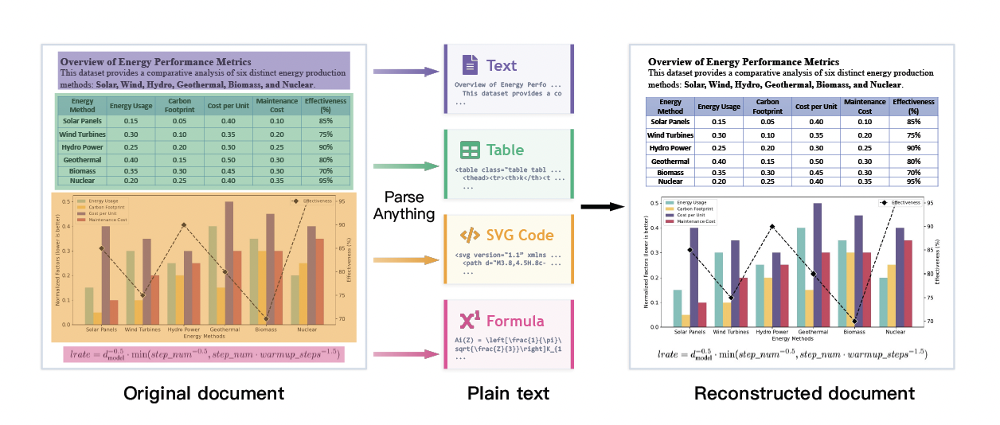

Paper Notes: dots.mOCR
last updated 2026-05-22
Overview
An extension to dots.OCR. They claim to introduce a new task, Multimodal OCR that parses ~all parts of a document into some representation (SVG, LaTeX equation, HTML table, etc.). Note that formulas and table derendering is already a pretty standard part of many OCR models, e.g., OlmOCR 2, which has a custom RL reward for formulas or LightOnOCR 2, which outputs HTML tables. CharXiv is used to derender chart figures.

Document Derendering
Besides “more data, better model” the core claim of the paper is that “multimodal OCR” should be the future direction of OCR. Multimodal OCR is basically just “document derendering, where they convert ~all parts of the document (tables, figures, and formulas) to code.
Running dots.mOCR
Model weights are hosted on HuggingFace, and the code to run it is on GitHub. Running it requires: 1. checking out the git repo, there isn’t a pathway to running it outside of this 2. using vLLM (and realistically, having a GPU – building vLLM for CPU is hard and not worth the time in this case given how long it would take to parse a document)
Installation
Preferred approach is via uv:
git clone https://github.com/rednote-hilab/dots.mocr.git
cd dots.mocr
uv pip install -e .
Running
From within the folder:
CUDA_VISIBLE_DEVICES=0 vllm serve \
rednote-hilab/dots.mocr \
--tensor-parallel-size 1 \
--gpu-memory-utilization 0.9 \
--chat-template-content-format string \
--trust-remote-code
python3 dots_mocr/parser.py <PDF_PATH> --num_thread 16
Architecture
It’s interesting that they opt to split ~equally between text and vision parameters. Vision is 1.2B params, initialized from scratch (huge!), and text is Qwen2.5-1.5B. LightOnOCR 2 is 400M/600M, and Nemotron Parse 1.1 goes more aggressively towards vision at ~600M/256M.
The vision encoder consumes very high resolution inputs: 11M pixels, which translates to something like 3300x3300 pixels.
Training Setup
Just like MinerU-Diffusion, they opt for curriculum learning, in this case 3 phases for pretraining, then instruction tuning: 1. general purpose vision 2. mixture of general purpose vision and text-only document parsing 3. multimodal document parsing (with a small amount of general purpose vision) 4. instruction tuning with high-quality data
Input resolution is progressively increased.
Data comes from four sources:
1. PDF documents: they use dots.OCR to auto-label a large quantity of PDFs, sampled across languages and complexity; they filter these ouptuts
2. web pages rendered to images + their bounding boxes from the DOM
3. native SVGs for image-to-SVG supervision: they grab a bunch of SVGs and clean with with svgo to remove metadata and normalize precision/code structure/etc. Deduplication with pHash on rendered images.
4. general purpose data: standard vision data “to preserve broad capabilities alongside page-level parsing”
They build an automated OCR Arena for evaluation, where Gemini 3 flash evaluates pairs of model outputs and chooses among { A, B, Tie } to determine which is best. They run each pair twice, once as A/B then once as B/A, to avoid positional bias (model chooses A because that’s what it sees first). Each model is given an Elo based on its pairwise matchups.
Questions
- How actually important is it to retain the “general performance” by carefully including VLM and text-only data? There are no “document-only” ablations run in this paper, and I haven’t seen them in other papers even though it’s common practice.
- In the general case, is derendering a figure to an SVG preferred over keeping it a raster? I can see an argument for derendering in certain cases, but it feels like it (a) introduces risks for charts (do you want the bars on your charts messed up?) and (b) might just be less useful than a raster + bounding boxes.
Useful Resources
Paper points to some neat tools:
- StarVector, a model/dataset for generating SVGs from images.
- svgo, a tool for normalizing SVGs
- pHash, a tool for perceptual hashing